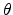
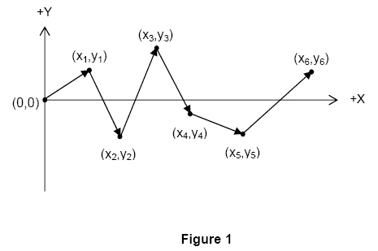
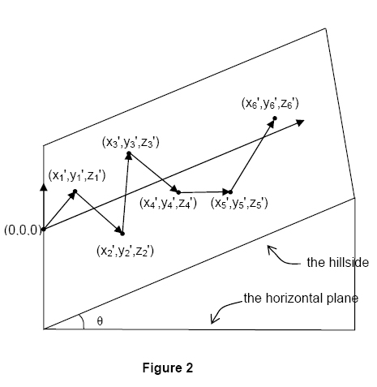
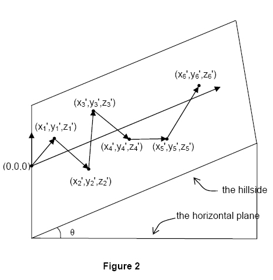

World Finals - Tokyo - 2006/2007
| 2377 - Grand Prix World Finals - Tokyo - 2006/2007 | ||||
You are the chief designer of a road race that will be held in a hilly area. The racecourse consists of N
The actual race is run on the side of a hill. For simplicity, assume the hill makes an angle 
The plane of the hill and the horizontal plane intersect in the y
This particular race is intended for novice drivers, so the racecourse must not include any segments that require downhill travel. That is, if the height of the endpoint of segment k
If a proposed racecourse includes downhill segments, it might be possible to transform it into a racecourse with no downhill segments by rotating the planar view of the entire course about the origin, without changing the angle between consecutive pairs of segments. However there may be proposed racecourses that cannot be made acceptable by such a rotation.
In this problem you must determine if a proposed racecourse is acceptable (that is, if it does not contain any downhill segments). If it is not acceptable, you must determine the minimum angle through which the racecourse must be rotated to make it acceptable, if that is possible.
The input consists of multiple test cases. Each test case is a description of a proposed racecourse and the slope of the hillside on which it will be run. The first line of each description contains two integers N
The last test case is followed by a line containing two zeroes.
For each test case, print a line containing the test case number (beginning with 1). If the proposed course is acceptable without rotation, print ``Acceptable as proposed". If the course is not acceptable as proposed, but can be made acceptable by rotating it about the origin, print ``Acceptable after clockwise rotation of X
Print a blank line after the output for each test case. Use an output format similar to that shown in the sample output below.

 zm'
zm'
 k

k

Input
 N
N 10000)
10000)

 45o)
45o)
 i
i N)
N)
Output
Sample Input
2 45
10 10
0 1
2 0
1 1
2 0
3 45
10 10
1 10
5 6
0 0
Sample Output
Case 1: Acceptable after clockwise rotation of 131.99 degrees
Case 2: Acceptable as proposed Case
Case 3: Unacceptable
Tokyo 2006-2007